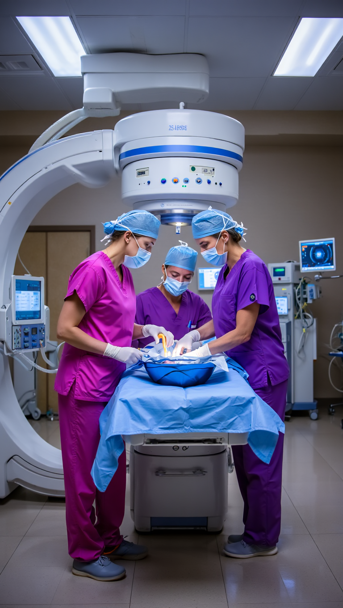

<section class="services-overview">
  <div class="services-overview-container">
    <div class="services-overview-header">
      <h2>Our Services</h2>
      <p class="services-subtitle">
        Learn more about our services or book online
      </p>
    </div>

    <!-- CT Scan Service -->
    <div class="service-section" id="ct-scan-section">
      <div class="service-content">
        <div class="service-text">
          <h3>CT Scan</h3>
          <p>
            A CT scan, or computed tomography scan, is a powerful imaging
            technique that combines X-ray technology with advanced computer
            processing to create detailed cross-sectional images of the body.
            This non-invasive procedure is essential for diagnosing various
            medical conditions, including tumors, internal injuries, and
            diseases affecting the organs.
          </p>
          <button class="service-learn-more">Learn more</button>
        </div>
        <div class="service-image">
          
        </div>
      </div>
    </div>

    <!-- X-Ray Service -->
    <div class="service-section" id="x-ray-section">
      <div class="service-content reverse">
        <div class="service-image">
          
        </div>
        <div class="service-text">
          <h3>X-Ray</h3>
          <p>
            An X-ray is a widely used imaging technique that employs
            electromagnetic radiation to create images of the internal
            structures of the body. This quick and painless procedure is crucial
            for diagnosing fractures, infections, and other medical conditions.
            X-rays help healthcare professionals visualize bones and certain
            soft tissues, allowing for effective treatment planning.
          </p>
          <button class="service-learn-more">Learn more</button>
        </div>
      </div>
    </div>

    <!-- Ultrasound Service -->
    <div class="service-section" id="ultrasound-section">
      <div class="service-content">
        <div class="service-text">
          <h3>Ultrasound</h3>
          <p>
            Ultrasound imaging uses high-frequency sound waves to create
            real-time images of internal structures. This safe, non-invasive
            procedure requires no radiation and is particularly valuable for
            examining soft tissues, monitoring pregnancies, and guiding medical
            procedures with precision.
          </p>
          <button class="service-learn-more">Learn more</button>
        </div>
        <div class="service-image">
          
        </div>
      </div>
    </div>

    <!-- DEXA Service -->
    <div class="service-section" id="dexa-section">
      <div class="service-content reverse">
        <div class="service-image">
          
        </div>
        <div class="service-text">
          <h3>DEXA Scan</h3>
          <p>
            DEXA (Dual-Energy X-ray Absorptiometry) scanning is the gold
            standard for measuring bone density. This precise, low-radiation
            procedure is essential for diagnosing osteoporosis, assessing
            fracture risk, and monitoring bone health over time, particularly in
            postmenopausal women and older adults.
          </p>
          <button class="service-learn-more">Learn more</button>
        </div>
      </div>
    </div>

    <!-- Interventional Radiology Service -->
    <div class="service-section" id="interventional-radiology-section">
      <div class="service-content">
        <div class="service-text">
          <h3>Interventional Radiology</h3>
          <p>
            A DEXA scan, or dual-energy X-ray absorptiometry, is a specialized
            imaging technique used to measure bone density and assess bone
            health. This non-invasive procedure utilizes low-dose X-rays to
            provide precise measurements, helping to identify osteoporosis and
            other conditions that affect bone strength. The scan is quick,
            painless, and plays a vital role in evaluating fracture risk and
            guiding treatment options.
          </p>
          <button class="service-learn-more">Learn more</button>
        </div>
        <div class="service-image">
          
        </div>
      </div>
    </div>
  </div>
</section>
